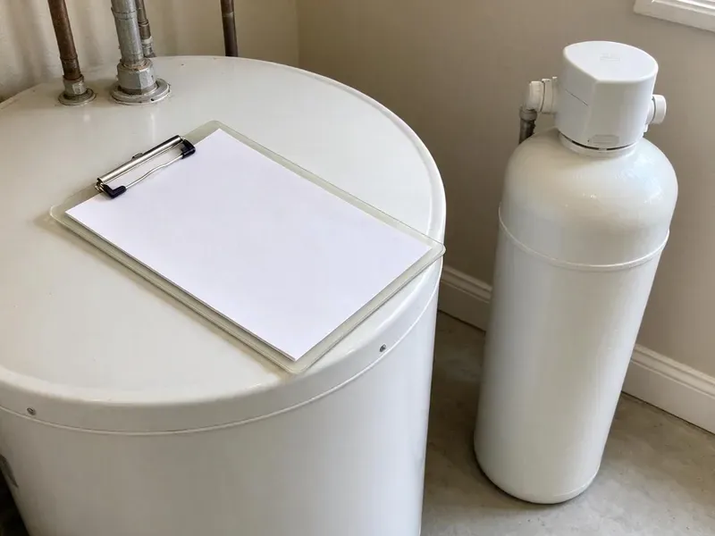
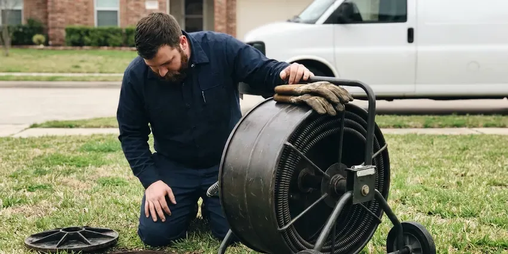

Walls Waterproofing in Burlington, VT
Water seeping through a foundation wall rarely fixes itself. We seal the cracks and add drainage to keep Burlington, VT basements and crawl spaces dry.
- Crack Injection Sealing
- Free Written Estimates
- Interior Drain Tile Systems
- Licensed Plumbers on Every Job
Wall Waterproofing Done Right in Burlington, VT.
Water damage spreads quietly behind paint. Get the wall checked early, before the drywall goes soft.
Walls Waterproofing in Burlington, VT That Starts With the Leak
CKV Plumbing waterproofs foundation walls that take a beating from wet soil and seasonal ground movement. Clay soils in river valleys drain poorly and can hold water against foundations, so sump systems are common in low-lying homes. A hairline crack in a poured wall can pass gallons of water during a long, soaking rain, and that water carries mold spores and rot into the framing above. We seal it properly. Every repair gets a written plan.
Our expertise includes:
- Interior masonry coatings for block and poured walls
- Sump pit and pump installation with battery backup
- Shower wall and pan membranes before tile

Additional Plumbing Maintenance Services in Burlington, VT
Our maintenance and specialty plumbing services in Burlington, VT protect your home year-round and extend the life of every system.


Customers
Why Choose CKV Plumbing for Walls Waterproofing in Burlington, VT?
Moisture meters and a thermal camera let us map the wet area without tearing out drywall to look. That keeps the demolition to the section that is actually wet, often a strip two feet high along the floor, and keeps the repair bill smaller. It is less mess, too.
- Source First, We fix the plumbing or drainage problem before any waterproofing goes on.
- Experienced Crew, Our techs train on current membrane systems and jobsite safety practices.
- Rated Membranes, We install manufacturer-approved systems rated for wet areas.
Citywide Coverage
Slab homes, crawl space homes and full basements all leak in their own ways. We serve homeowners, landlords and small businesses throughout Burlington, and each one gets the same inspection process, starting at the wall that shows the damage and working back toward the pipe, pan or downspout that caused it. The source is rarely where the stain is.
Experienced Team
The crew that shows up in Burlington, VT has handled bowed block walls, leaking window wells, failed shower pans and sump pits that overflowed during a storm. Few surprises are left. You get a straight answer about what they find.
Safety-First Approach
Shower waterproofing follows plumbing code and the manufacturer's rules for slope, curb height and drain connections. We flood test every pan for 24 hours before the tile setter starts, and we photograph the water line at the start and the end of the test. If the water level drops, we rebuild the pan.
Trusted Certified Burlington Plumbing Services Professionals
At CKV Plumbing, we are proud to offer certified plumbing services throughout Burlington, VT. Credentials matter in this trade. Our plumbers hold recognized industry credentials, and they follow strict safety and quality rules on every repair, installation and maintenance call we run.
Call Us Now PHCC Plumbing Contractor Recognition
PHCC Plumbing Contractor Recognition Better Business Bureau (BBB) Accreditation
Better Business Bureau (BBB) Accreditation Angi Certified Pro
Angi Certified Pro ISO 9001 Quality Management Certification
ISO 9001 Quality Management CertificationFoundation, Shower and Block Wall Sealing in Burlington, VT
Shower Wall Waterproofing in Burlington
Tile and grout are not waterproof. Water passes through grout every time you shower, so the layer behind the tile, cement board with a membrane or a foam board system, is what actually keeps the studs dry. We tear out failed tile, install new backer, and apply Schluter Kerdi, RedGard or Hydro Ban at the thickness the manufacturer calls for. We reinforce corners, niches and valve penetrations with fabric or preformed pieces.

Plumbing Leak Behind Walls in Burlington
A drip from a shower valve cartridge, a sweated copper stub or a loose drain slip nut can soak a wall cavity for months before paint bubbles. We find it with a moisture meter, a thermal camera that picks up the cooler wet area, and a pressure test on the supply lines. Then we cut a clean access hole. The bad fitting or section of pipe gets replaced. We pull wet insulation and run fans until the cavity reads dry.
Exterior Block Wall Waterproofing in Burlington, VT
White crust on block or stem walls is efflorescence, salt left behind as water moves through the masonry and dries. The usual cause is a sprinkler head aimed at the house instead of the bed, or soil graded toward the foundation. We fix the water first. Then we clean the wall, let it dry and apply a breathable masonry sealer or elastomeric coating.
Crawl Space Encapsulation in Burlington
Encapsulation seals the whole crawl space, walls and floor, with a reinforced poly liner. We run 12 to 20 mil liner up the walls, tape every seam, seal around piers and pipe penetrations, and often add a dehumidifier to keep relative humidity below 60 percent. A long, cold heating season is the defining stress on Vermont plumbing, with months of freezing nights and repeated freeze and thaw cycles. The joists stop rotting. Drier air under the floor also cuts down on the musty smell in the house.
Foundation Crack Repair in Burlington
Crack injection takes about two hours per crack. We set injection ports every 8 to 12 inches along the crack, seal the surface with epoxy paste, and pump in resin starting at the lowest port and working up until it pushes out the next port. Polyurethane flexes a bit if the wall shifts, and epoxy bonds the two sides back together. The surface paste gets ground off once it cures.
Waterproofing for Older Homes in Burlington, VT
Houses built before modern drainage rules often have no footing drain at all, or a clay tile drain that collapsed decades ago. Renovations in Burlington frequently mix original plumbing with newer copper or PEX, so a thorough look at transitions and fittings is important. Fieldstone and old brick foundations need breathable products. Sealing soft old brick with a rigid coating traps water inside it and makes the face spall off over a few seasons, so we use lime-compatible or vapor-open coatings and pair them with interior drain tile. Old mortar joints get repointed first.
Exterior Foundation Waterproofing in Burlington
Exterior waterproofing means digging down to the footing and coating the outside of the wall. It is the most dependable way to stop a basement leak, because the water never touches the block or concrete. We apply a rubberized asphalt or polymer membrane, add a dimple board to protect it, and set perforated drain pipe in gravel along the footing so water has somewhere to go. Clay soils in river valleys drain poorly and can hold water against foundations, so sump pumps are common in low-lying homes. We backfill after the drain is tested.

Drainage System Integration in Burlington, VT
Water has to go somewhere once a wall is sealed. Exterior footing drains, interior drain tile and surface French drains all do the same job at different depths. We match the drain to where the water comes from, which might be a high water table, a yard that slopes toward the house, or a downspout emptying right at the foundation. We extend downspouts at least four feet from the wall.
Waterproofing Contractors Near You in Burlington, VT
Searching for wall waterproofing near me in Burlington, VT usually means there is already a wet spot on the wall. CKV Plumbing sends a tech with a moisture meter and a thermal camera, usually inside a day or two, to find out how far the water has spread. Small leaks and big ones get the same inspection.
Water in a wall does not wait for a convenient week. We keep open slots for active leaks, and when a pipe is still dripping inside the wall we can shut it off, open the drywall and start drying the cavity that same day. Most cavities dry out in three to five days.
CKV Plumbing at a Glance
- Licensed and insured plumbers serving Burlington, VT
- Same-day appointments and 24/7 emergency response
- Upfront, flat-rate pricing before work begins
- 4.8-star rated by 553+ Vermont customers
Burlington Map
Burlington Information
- Population
- 44,528
- Area codes
- 802/860/603
- Service area
- Burlington and towns within a 40 mile drive
- Nearby
- Winooski, South Burlington, Essex Junction, Shelburne
Foundation walls in Burlington, VT take water from two directions, rain soaking the soil outside and hydrostatic pressure pushing through cracks and porous block.
Talk to a Plumber
Call CKV Plumbing for honest, reliable plumbing from people who know the trade in Burlington, VT.
Our Specialized Plumbing Services in Burlington, VT
At CKV Plumbing, you get every kind of plumbing service from one company across Burlington, VT. From leak detection to full system installs, our team works fast and charges fair prices on homes and commercial properties alike. Here are the core services we offer:


How a Wall Waterproofing Job Goes in Burlington, VT
Every job starts with finding the water and ends with a sealed wall that has been tested.
Request a Quote
Call (802) 209-5139 or use the online form. We book a time that fits your schedule for the on-site visit.
Detailed Inspection
Our tech tracks down where the water is coming from and checks how far the damage reaches. You get the findings in plain terms.
Custom Solution
We build the plan around the leak and the type of foundation, and pick materials that suit the wall.
Frequently Asked Questions About Walls Waterproofing in Burlington
Crack injection runs about $300 to $800 per crack. A full exterior dig and membrane on a basement usually lands between $8,000 and $20,000, depending on depth, wall length and what sits against the house, while interior drain tile with a sump typically costs $4,000 to $12,000. Prices vary with access. Each quote is itemized after we inspect.
Interior systems manage water after it has come through the wall, using drain tile under the slab edge and a sump pump. Exterior waterproofing stops water before it reaches the wall, which means digging down to the footing and applying a membrane to the outside face. The exterior route costs more.
Done right with good materials, a waterproofing system lasts 20 to 50 years. The range is wide because soil movement, the water table and the quality of the original install all play a part, and a crack that opens later can let water around even a good membrane. Over time, drain tile can fill with silt.
Crack repairs take a few hours. Interior drain tile usually takes one to three days, and a full exterior dig around the whole house can run three to seven days or more depending on the weather and the depth of the footing. Your timeline comes with the quote.
Look low on the wall first. Damp patches, a musty smell, mold on the bottom of the drywall, white powdery efflorescence on block or brick, and puddles after rain all point to water coming through. Stair-step cracks and bowing walls also deserve a closer look.
Damp proofing is usually a thin spray-on asphalt coat. It slows soil moisture but will not stop water that is pushing against the wall under pressure. Waterproofing uses thicker membranes, drainage boards and footing drains rated to stop liquid water, which is what a basement in wet soil or a high water table needs.
Patching one small crack yourself is fine. A full system involves excavation, heavy equipment, correct product thickness and an understanding of how water drains around a footing, plus local code on drainage and backfill. Done wrong, it can trap water against the wall and cause more damage.
It depends on the wall and the site. On exterior foundation work we use rubberized asphalt sheet membranes, polyurethane-modified asphalt liquids, bentonite panels and crystalline coatings, picking the one that suits the soil and the wall material. For showers, we use Kerdi, RedGard or Hydro Ban.
Hear From Customers Who Hired Our Plumbing Experts

Lisa C.
Water was pouring out from under the washing machine on a holiday weekend. CKV Plumbing talked me through closing the valves over the phone and had a plumber at the house within ninety minutes. It was a burst fill hose.
Emergency Plumbing · St. Albans, VT
Jessica T.
We were adding a gas range in a kitchen remodel and needed a new line run from the meter. The plumber pulled the permit, ran the pipe through the crawl space, and had it inspected and approved within the week.
Gas Line Repair · Middlebury, VTRachel N.
Hard water was leaving white crust on every faucet and our dishwasher was struggling. The tech tested the water, recommended a softener sized for a family of five, and installed it with a bypass valve in one afternoon. The spots on our glasses are gone.
Water Softener · Shelburne, VT
Robert G.
The camera showed a full break in our clay sewer line near the street. CKV Plumbing replaced it with a trenchless pipe burst, so the only digging was two small pits in the yard. They let us watch the footage before and after.
Sewer Line Replacement · South Burlington, VT
Mark T.
The floor drain in our office break room backed up every few weeks. The plumber ran a cable, then put a camera down and found roots at a joint about thirty feet out. Seeing it on the screen made the decision easy.
Drain Cleaning · St. Albans, VTSofia M.
Two new toilets went in during one visit. The tech set them on new wax rings and swapped the old supply lines. He also noticed our bathroom faucet dripping and replaced the cartridge while he was there. No mess left behind.
Toilet Installation · Shelburne, VT